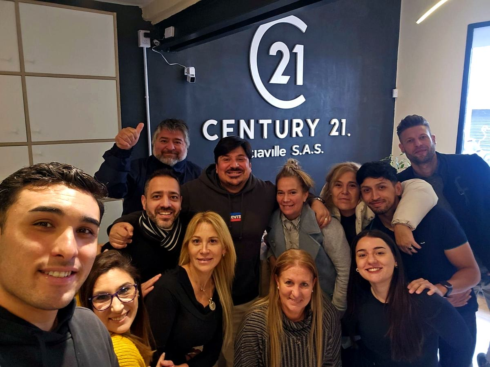

Antes de conocernos, contanos de vos.
Este cuestionario nos ayuda a que la entrevista sea una conversación más rica y personalizada. No hay respuestas correctas o incorrectas: lo que más valoramos es la honestidad.
Tu progreso no se guarda: completalo de una vez.
Century 21 Argentina
Una de las redes inmobiliarias más activas y reconocidas del país, con oficinas adheridas que comparten metodología, marca y cultura de trabajo.
Sociaville S.A.S. · Córdoba
Oficina adherida a Century 21 en Zona 9, Córdoba. Un equipo de profesionales con vocación comercial, trabajo en equipo y foco en la excelencia en el servicio.
Un modelo de negocio diferente
El asesor trabaja de forma independiente, pero no solo: cuenta con el respaldo de la marca, la metodología, la capacitación y el equipo de la oficina.
Qué buscamos
Vocación comercial, habilidades relacionales y mentalidad emprendedora. No pedimos experiencia previa en el rubro: buscamos actitud, disciplina y ganas de construir una carrera en serio.
Antes de empezar
En tus propias palabras: ¿qué creés que hace un asesor inmobiliario en su día a día?
No buscamos la respuesta "correcta" ni conocimiento técnico. Nos interesa saber desde dónde arrancás y qué imagen tenés del rol.
EjemploCreo que el asesor inmobiliario ayuda a las personas a comprar o vender propiedades, hace visitas, negocia precios y acompaña el proceso hasta la firma.
Desarrollá un poco más tu respuesta: mínimo 80 caracteres.
Tus datos
¿Quién completa el cuestionario?
Tus respuestas llegan directamente al equipo de selección.
Escribí tu nombre y apellido.
Revisá el email, parece incompleto.
Si lo compartís, el equipo puede conocerte un poco más antes de la entrevista.

Cuestionario completado
¡Gracias, !
Llegaste hasta acá, y eso ya dice mucho sobre tu interés en ser parte de este equipo. Tus respuestas fueron recibidas y serán revisadas antes de nuestra primera conversación.
- 01Revisamos tus respuestas con cuidado.
- 02Te contactamos muy pronto para coordinar la entrevista.
- 03Nos encontramos en Jujuy 329, Córdoba.
Completado el . Este proceso es confidencial: tus respuestas son solo para uso interno del equipo de selección.